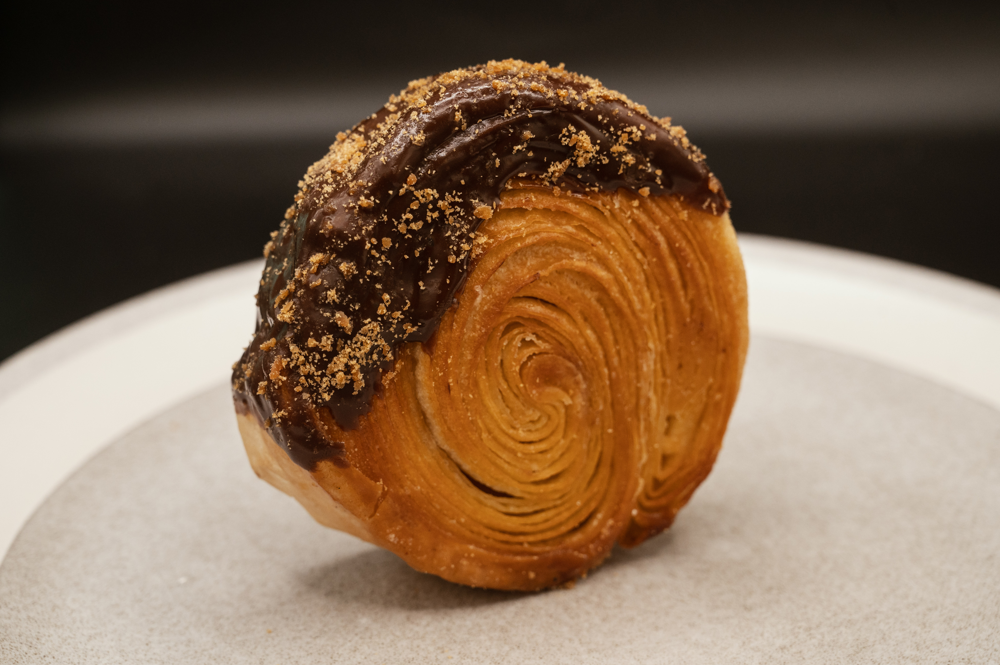

Cronut Recipe

Ingredients
- 1 cup all-purpose flour
- 1/2 cup sugar
- 1/4 cup butter, softened
- 1/2 cup milk
- 1 egg
- 1 tsp vanilla extract
- 1 tsp baking powder
- 1/2 tsp salt
Instructions
- Preheat the oven to 350°F (175°C).
- In a bowl, mix flour, sugar, baking powder, and salt.
- Add butter, milk, egg, and vanilla extract. Mix until smooth.
- Pour the batter into a greased donut pan.
- Bake for 15-20 minutes or until golden brown.
- Let cool before removing from the pan.
- Enjoy your delicious cronut!
Back to Homepage